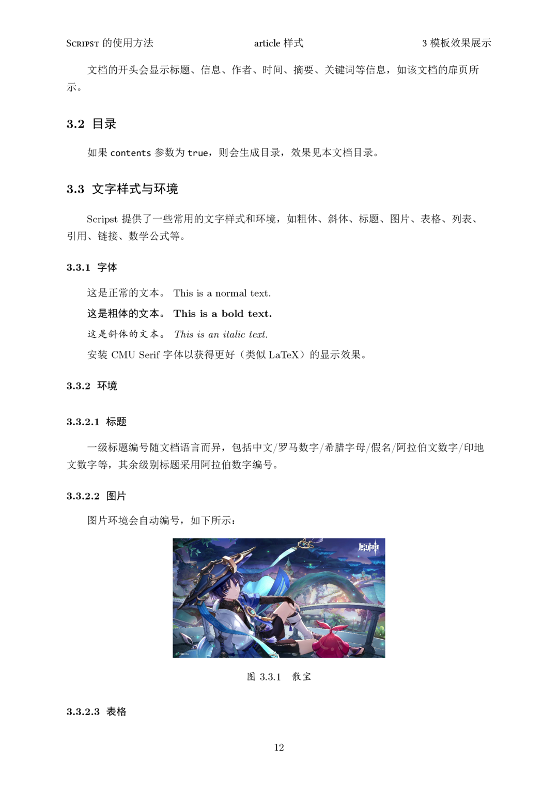
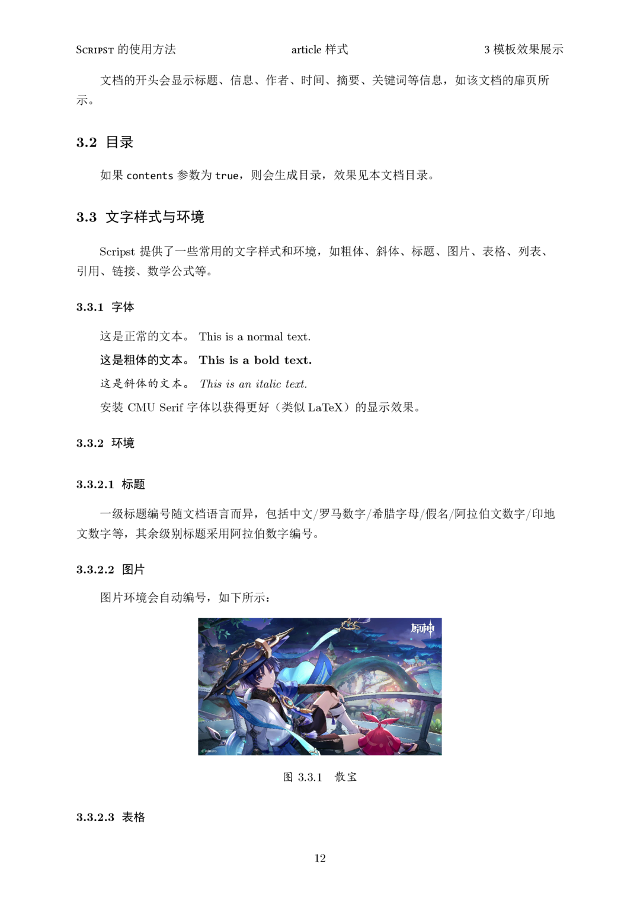
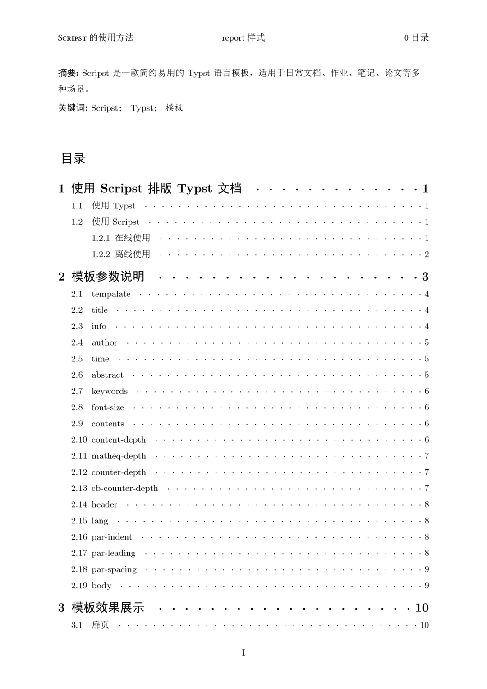
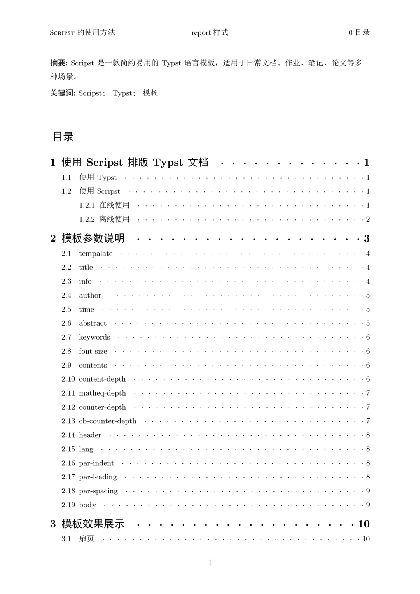

Scripst
Scripst is a template package based on Typst, offering a set of simple and efficient document templates suitable for everyday documents, assignments, notes, papers, and other scenarios.
🚀 Features
- High Extensibility: Modular design, easy to extend the templates.
- Multilingual Design: Localization for different languages.
- Supports custom countblock: Convenient for generating theorems, problems, and other counters or styles.
 


📦 Installation
Install Typst
Make sure Typst is installed. You can install it using the following commands:
sudo apt install typst # Debian/Ubuntu
sudo pacman -S typst # Arch Linux
winget install --id Typst.Typst # Windows
brew install typst # macOS
Or refer to the Typst official documentation for more information.
Download Scripst Template
Method 1: Download Manually
- Visit the Scripst GitHub repository
- Click the
<> Codebutton - Choose
Download ZIP - After extraction, place the template files into your project directory.
Suggested directory structure
project/
├── src/
│ ├── main.typ
│ ├── components.typ
├── pic/
│ ├── image.jpg
├── main.typ
├── chap1.typ
├── chap2.typ
If the template is stored in the src/ directory, import it like this:
#import "src/main.typ": *
Method 2: Use Typst Local Package Management
You can manually download Scripst and store it in:
~/.local/share/typst/packages/local/scripst/1.1.0 # Linux
%APPDATA%\typst\packages\local\scripst\1.1.0 # Windows
~/Library/Application Support/typst/packages/local/scripst/1.1.0 # macOS
or using these commands:
cd {data-dir}/typst/packages/local/scripst
git clone https://github.com/An-314/scripst 1.1.0
Where data-dir refers to Typst's data directory, such as ~/.local/share/typst for Linux, %APPDATA%\typst for Windows, and ~/Library/Application Support/typst for macOS.
Then import directly in your Typst file:
#import "@local/scripst:1.1.0": *
Now you can use the Scripst template.
Use typst init to quickly create a project:
typst init @local/scripst:1.1.0 project_name
📄 Using Scripst
Import Scripst Template
Import the template at the beginning of your Typst file:
#import "@local/scripst:1.1.0": *
Create article Document
#show: scripst.with(
title: [How to Use Scripst],
info: [This is an article template],
author: ("Author1", "Author2", "Author3"),
time: datetime.today().display(),
abstract: [Abstract content],
keywords: ("Keyword1", "Keyword2", "Keyword3"),
contents: true,
content_depth: 2,
matheq_depth: 2,
lang: "en",
)
🔧 Template Parameters
| Parameter | Type | Default Value | Description |
|---|---|---|---|
template |
str |
"article" |
Choose template ("article", "book", "report") |
title |
content, str, none |
"" |
Document title |
info |
content, str, none |
"" |
Document subtitle or supplementary information |
author |
array |
() |
List of authors |
time |
content, str, none |
"" |
Document date |
abstract |
content, str, none |
none |
Document abstract |
keywords |
array |
() |
Keywords |
preface |
content, str, none |
none |
Preface |
font_size |
length |
11pt |
Font size |
contents |
bool |
false |
Whether to generate a table of contents |
content_depth |
int |
2 |
Table of contents depth |
matheq_depth |
int |
2 |
Math equation numbering depth |
lang |
str |
"zh" |
Language ("zh", "en", "fr", etc.) |
✨ Template Examples and Explanations
Article

Book

Book Demo (Only in Simplified Chinese)
Report
 

Report Demo (Only in Simplified Chinese)
📜 Contributing
Feel free to submit issues or pull requests! If you have any improvement suggestions, join the discussion.
- GitHub Repository: Scripst
- Issue Feedback: Submit an issue to discuss
📌 Fonts
This project uses the following fonts by default:
- Primary fonts: CMU Serif, Consolas
- Alternative fonts: Linux Libertine
- Chinese fonts such as SimSun, SimHei, KaiTi, etc.
If using these default fonts, please make sure they are correctly installed. Otherwise, replace them if needed in ./src/configs.typ.
📦 Dependencies
For certain content, Scripst uses the following Typst packages:
🎯 TODO
- [ ] Add
beamertemplate